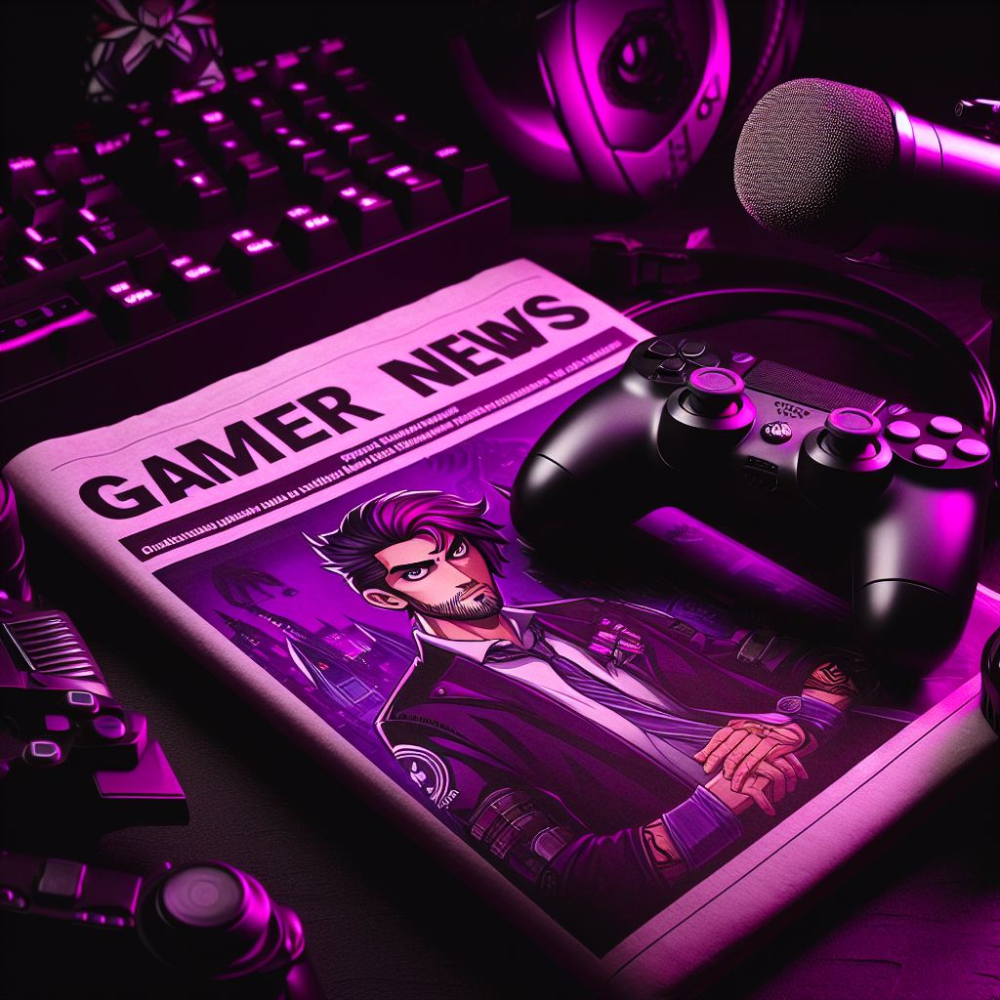
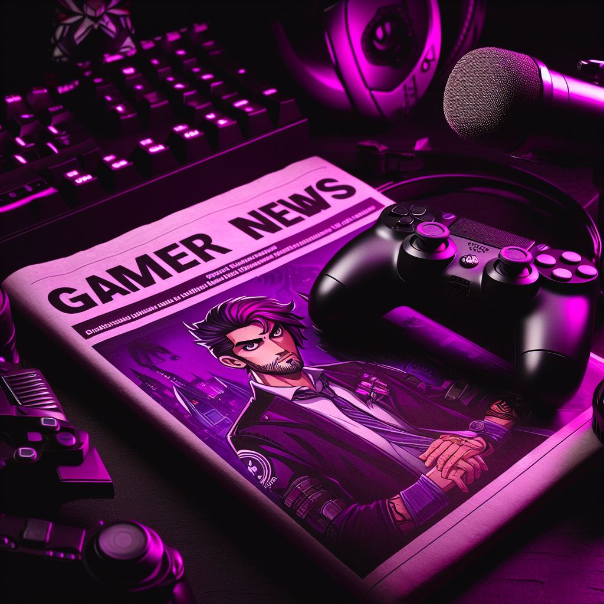

Os jogos mais populares de 2024
1 PUBG – 320 milhões
2 Fortnite – 240 milhões
3 Roblox – 210 milhões
4 Minecraft – 170 milhões
5 League of Legends – 140 milhões
6 Rocket League – 85 milhões
7 Call of Duty Warzone – 70 milhões
8 Genshin Impact – 64 milhões
9 Apex Legends – 63 milhões
10 Counter-Strike 2 – 45 milhões
Os 10 melhores filmes baseados em jogos
1 Sonic: O Filme
2 Terror em Silent Hill
3 Uncharted: Fora do Mapa
4 Mortal Kombat
5 Um Lobo Entre Nós
6 Prince of Persia: As Areias do Tempo
7 Assassin’s Creed
8 Tomb Raider: A Origem
9 Warcraft: O Primeiro Encontro de Dois Mundos
10 Resident Evil: O Hóspede Maldito
Jogos desconhecidos, mas que merecem uma chance
Last Day of June
Impact Winter
Omensight
Welcome to Hanwell
Walden, a game
MICROSOFT
Uma notícia vem causando impactos no mundo dos games. Em 2020 foi aprovada pelos órgãos reguladores responsáveis nos EUA e na Europa A compra da Bethesda pela Microsoft por US$ 7,5 bilhões, gerando um verdadeiro frenesi nos apaixonados por jogos de PC, consoles ou dispositivos móveis.
Contudo, hoje temos a notícia que Microsoft acaba de realizar cortes em seus estúdios relacionados, incluindo... a Bethesda! Decisão que realocará alguns funcionários e, demitirá muitos outros. E não acaba aí. Estúdios como Arkane Austin (Redfall) e Tango Gameworks (Hi-Fi Rush e The Evil Within) foram encerrados.
Notícia que pegou todos os aficionados pela Microsoft de surpresa. A decisão foi justificada pelo diretor do Xbox Game Studios como "repriorização de títulos e recursos". Justificativa totalmente genérica.
Não sabemos o que levou de fato a diretoria começar a reduzir os seus estúdios, somente podemos torcer que a criatividade e a qualidade dos produtos não sejam afetadas. Somente o tempo dirá.

NINTENDO
Em 1889, imaginem só! Uma empresa começa a produzir baralhos e brinquedos. Depois de um século de história, a empresa continua no ramo da diversão, só que agora, com os games que tanto amamos.
Sim, estamos falando da Nintendo. A companhia japonesa lançou vários consoles em sua jornada, Do Color TV-Game (em 1977), até chegarmos ao Nintendo Switch (em 2017). Alguns, sem dúvida, com mais sucesso do que outros. Foram 14 consoles até agora, incluindo os que marcaram gerações: Game Boy, Super Nintendo, Nitendo 64 e o Wii.
Agora, depois de anos sem inovações, a Nintendo confirmou que irá lançar um upgrade do seu Nintendo Switch. No Nintendo Direct, evento que será realizado em junho desse ano onde o presidente da empresa apresentará os jogos Switch para o segundo semestre de 2024, a pressão será grande para que ele confirme as disposições da empresa para esse novo console. Os rumores estão fortes e indicam que a empresa está aprimorando mesmo o seu novo console, o Switch 2, para lançamento em 2025. O detalhe supostamente vazado desse novo console sugere que o dispositivo contará com versões magnéticas dos Joy-Cons e talvez até permitirá que os jogadores usem seus controles antigos também. Se esses rumores se concretizarem, é possível que você também poderá usar jogos físicos e digitais do Switch em seu sucessor. É só aguardar para conferir.

SUICIDE SQUAD: KILL THE JUSTICE LEAGUE
O Esquadrão Suicida: Mate a Liga da Justiça decepcionou a Warner Bros. A Discovery, através de sua desenvolvedora Rocksteady, deu um rombo de US$ 200 milhões na receita como resultado de uma comparação difícil com o jogo mais vendido do ano passado, Hogwart's Legacy.
O jogo tinha gerado altas expectativas por parte dos desenvolvedores, contudo, não superou o sucesso de vendas que foi o Hogwart's Legacy, isso levou um impacto nos lucros da empresa em US$ 200 milhões no EBITDA durante o primeiro trimestre. Em uma chamada de acompanhamento com foco no investidor, o chefe da Warner Bros. Discovery, David Zaslav, chamou o lançamento de Esquadrão Suicida: Mate a Liga da Justiça de "decepcionante", antes que o diretor financeiro da Warner Bros. resultado do fracasso do jogo.
"Começando com os estúdios, o declínio de mais de US$ 400 milhões ano após ano durante o primeiro trimestre foi principalmente devido à comparação muito difícil que enfrentamos nos jogos contra o sucesso de Hogwarts's Legacy no ano passado no primeiro trimestre, em conjunto com o decepcionante lançamento do Esquadrão Suicida neste ano (trimestre passado), que prejudicamos, levando a um impacto de US$ 200 milhões no EBITDA durante o primeiro trimestre", disse Wiedenfels. EBITDA significa lucro antes de juros, impostos, depreciação e amortização.
 
